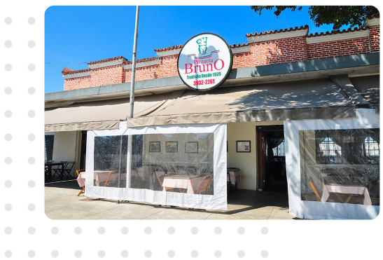

Índice
Principais locais para visitar
Quando falamos em Freguesia do Ó , o primeiro lugar que vem em mente é o largo da Matriz , ela é o principal lugar do bairro e é rodiado de restaurantes e bares.

O FrangÓ é um dos bares mais populares de tradicionais da região. localizado no largo da Matriz desde 1987 , o boteco é muito famoso pela sua coxinha.

A pizzaria do Bruno tem mais de 17 anos e é uma das primeiras prizzarias abertas na cidade de Sp, ela funciona desde 1939 , no largo da Matriz. [5]
